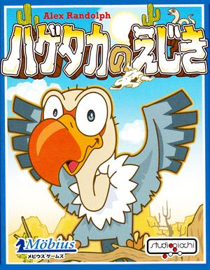
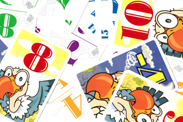

ひとりごと
これは面白いと思ったカードゲーム
(ハゲタカのえじき)(2013/12/25)
～「ハゲタカのえじき」～
コンピューターゲームではありません。
会社のイベントで同僚達をプレイして、「これは面白過ぎる」と思ったゲームです。
ドイツ製の世界的に有名なカードゲームですが、トランプとUNOしかやったことのない自分や同僚が多数存在しますので、一般的にはあまり知られてないと思います。

～誰でもすぐ楽しめる単純なルール～
誰でもすぐに理解出来るカンタンなルールで、程良い平等性とプレイヤー同士の心理戦、適度なランダム性で間違いなく誰でも面白いと思えるゲームです。
プレイヤー人数は3人以上、一応6人まで、プレイヤーや全員、15枚の同じ手札(1～15までの数字)を持ち、場の山札からめくられる、得点カードを(-5～10までの数字)「競り」の要領で取り合います。
全員が伏せて出して一斉に表にして判定します。
基本的に大きい数字を出した人のものになります。が同じカードが出た時は、次点の人の物になります。
このカードがそのまま得点として計算されます。
いかに人とかぶらないで、低い数字で高得点を取るか、勝つためのポイントになります。
マイナスの場合は、逆で低い数字を出した人のものになってしまいます。
このような感じでゲームを進め、山札の15枚を消化した次点で一番得点の高い人の勝ちとなります。
ちょうど、ハゲタカ(プレイヤー)が、獲物(特典カード)を空の上から狙い合っている様子を
イメージしてみるとわかりやすいかと思います。
数字が速さで、速いほうが当然早く獲物にたどり着けますが、速さが同じだとプレイヤー同士でぶつかってしまいます。
その場合は、あとで来たものが最終的に獲物を得ることができます。
と言ったイメージを思い浮かべると、わかりやすいかもしれません。
一度、少し触れば誰でもわかるルールであり、手札は全員同じため、
トランプ大富豪などと違い、配られた次点で既に不利、良いカードを引けなかったら、不利ということがないことが最大の特長です。

TVゲームが主流になりつつある現代ですが、コンピュータを使わないカードゲームには、プレイヤー同士によるそれとは違った面白さがあります。

簡単なルールでスリリング！何度でも遊びたくなる大人気のゲームです。
海外メーカー製が絶版のため、日本のメーカーが復刻させました。
｢ドメモ｣｢ガイスター｣｢ザーガランド｣などを手がけたアレックス・ランドルフ作